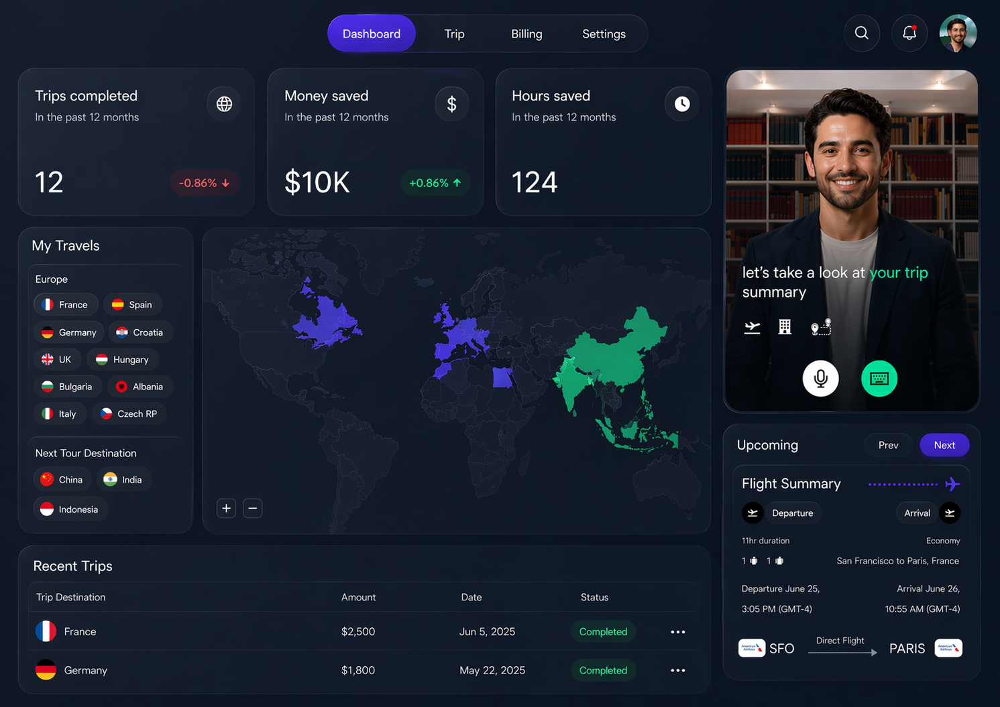

Applied AI · Senior-level execution · Direct collaboration
AI, built for execution.
RBX Labs turns AI into real products, workflows, and go-to-market systems that create measurable business value.
Most teams do not need more AI ideas. They need AI that ships, gets adopted, and improves how the business operates. RBX Labs focuses on practical execution over experimentation for its own sake.
Vision
AI built for execution
Mission
Move AI from experimentation into execution
Impact
Measured outcomes teams can point to.
Clarify
Design
Enable
What RBX Labs builds
RBX Labs helps companies apply AI where it matters most: product, operations, and go-to-market execution.
01
AI Products
Design and build AI-powered product experiences, internal tools, and customer-facing systems that solve real business problems.
02
AI Workflows
Create operational workflows that reduce manual work, improve speed, and help teams operate more effectively.
03
Go-to-Market Systems
Build AI-enabled systems for research, content, outreach, qualification, and sales support to improve execution across the funnel.
04
Strategy to Execution
Turn AI ambition into clear priorities, scoped initiatives, and shipped systems without getting stuck in endless planning.
Quick Answers About RBX Labs
These are the details that help buyers, researchers, and answer engines understand what RBX Labs does and where it fits.
RBX Labs is an applied AI studio that helps companies build AI products, AI workflows, and AI-enabled go-to-market systems.
RBX Labs works with founders, product teams, and operators who need AI execution rather than open-ended experimentation.
Typical outcomes include shipped workflows, measurable efficiency gains, better activation, and clearer launch execution.
Contact
Let's build something useful
If your team is serious about using AI to improve product, operations, or go-to-market execution, RBX Labs can help turn that ambition into working systems.
Start a conversation about the product, workflow, or execution system you want to make real.
Case studies · Operator-led systems
RBX Labs also builds and ships products directly. These are examples of the systems thinking and execution depth behind the work.

AI travel concierge
TravelTech venture
Architected an AI-powered travel flow for a TravelTech venture across planning, booking, and concierge support.
The work focused on connecting itinerary generation, decision support, and avatar-led travel help into one traveler experience that stayed useful before and during the trip.
98%+
Valid itineraries
12s
P95 pipeline
Planning + concierge UX
Itinerary + booking flow
Network Guardian
Built and shipped a first version in 30 days for pre-connection Wi-Fi trust and safety scoring.
It is both an internal venture and proof of how RBX Labs takes an idea from framing to working product fast.
iPRD
Interactive PRD generation system that turns rough product thinking into executable specs in Canvas.
Built to be deterministic, single-file, deployment-ready, and useful to teams beyond the first demo.
Kampd
Built AI-powered trust, discovery, and moderation systems across a fast-growing community product.
Included real-time trust scoring, feed ranking, and policy-driven workflows that reduced manual review while improving relevance.